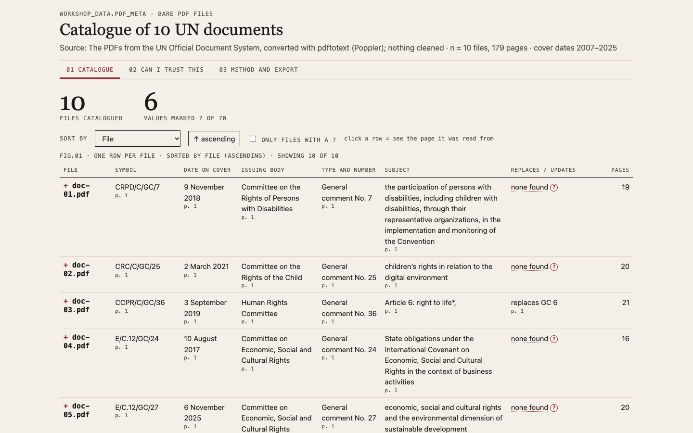
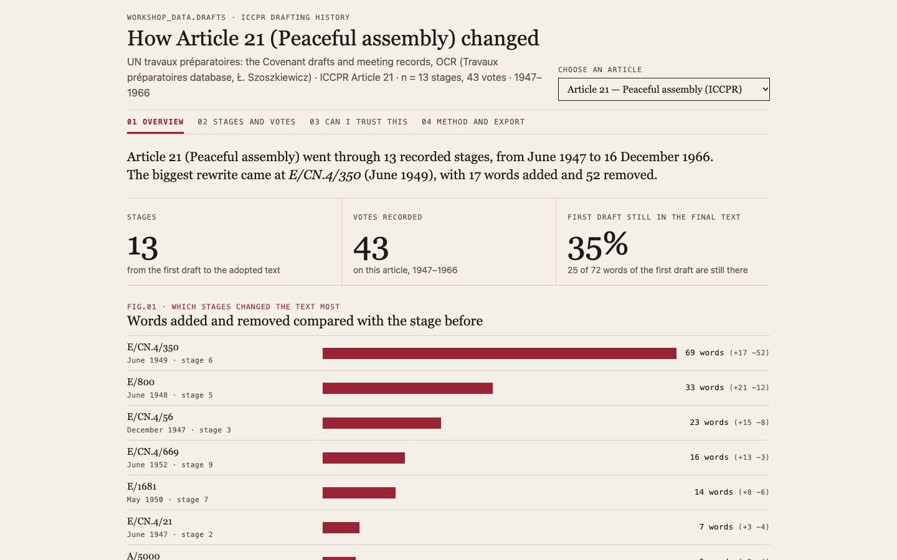

Run 2026-11-15-lab-sonnet-a. Country: Kenya. Click a screenshot to open the app.
| Claude Sonnet 5.5 · USA · Amazon Bedrock | |
|---|---|
| x-meta-pdfs |  8/9 · None s · $0.000 · 393 lines row_facts_replaces |
| x-versions |  5/8 · None s · $0.000 · 470 lines text_contains, diff_added, diff_removed |